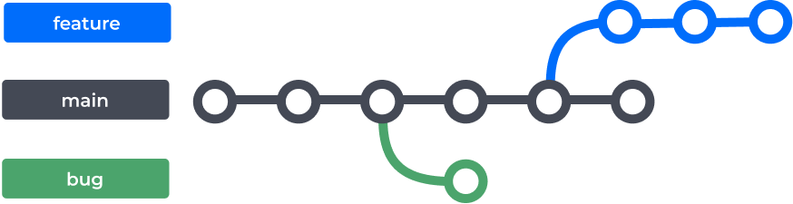

1 Introdução
1.1 Git e GitHub
Assim como o R é a linguagem de programação compilada pelo Rstudio, o Git é a linguagem usada pelo site do GitHub para fazer versionamento e backup de códigos além de proporcionar o trabalho em equipe de forma mais eficiente.
1.2 Vocabulário importante
- Versionamento: Versionar um código ou fazer controle de versão de um código nada mais é que registrar as etapas da contrução de uma aplicação, registrar alterações e conseguir retornar a versões anteriores que foram versionadas.
- Repositório: nada mais é que uma pasta que é monitorada pelo git. É usual dizer repositório remoto referindo-se a pasta versionada no GitHub e repositório local a pasta no ambiente local.
- Commit: quando deseja-se adicionar, editar ou remover arquivos, o commit é o que registra essas mudanças. Ou seja, o registro das alterações é um commit
- Clone: fazer download do repositório para fazer alterações e seus próprios commits
- Fork:
- Branchs: são os galhos da aplicação. Uma vez que dividimos a construção de um código em etapas é comum vermos branchs do tipo main que indica o que está em uso, ou seja, o código principal. No contexto da empresa, seria o código mais oficial sem aqueles bugs que encontramos na parte de desenvolvimento de um código. Daí outra branch, develop, também dita feature, que é o galho onde fixamos o desenvolvimento de novas aplicações, funções, até testes de desenvolvimento e etc. Há outras brachs, como específica para corrigir erros, mas podemos resumir em 2 práticas para empresa.
Também verá a branch main sendo chamada de master, porém está em desuso por ter uma origem racista. Convencionou-se usar main nos textos mais atuais. VScode e outras IDE’s já usam só main.

Imagem mostra como seria a dinâmica de branchs main, feature e bug
Merge: processo de mesclar commits feitos em uma branch para outro. Normalmente quando se faz uma aplicação na branch develop e deseja-se disponibilizar a alteração feita na main.
Push: envia arquivos locais para o ambiente remoto
O macete mais famoso que é visto por aí é que push não puxa, ou seja, push não traz arquivos do ambiente remoto para o local, logo, push empurra os arquivos do ambiente local para remoto.
Pull: atualiza seu repositório local com o arquivo mais recente do repositório remoto
Pull Request:
Conflito:
Tag: descrição do commit feito, ex: “exportando dados”. Veremos em Boas práticas como colocar tags relevantes.
Issues: